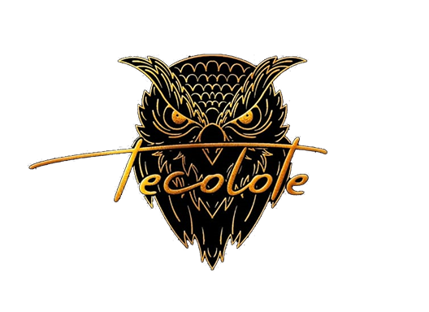

ESTANDARIZACIÓN DE COMPROMISO LABORAL PARA EL BIENESTAR Y LA PRODUCTIVIDAD "TECOLOTE"
EL PRESENTE FORMULARIO TIENE COMO OBJETIVO RECOLECTAR INFORMACIÓN VALIOSA Y HONESTA DE TODOS LOS TRABAJADORES DEL RESTAURANTE TECOLOTE, CON EL FIN DE ENTENDER LAS CAUSAS SUBYACENTES DE LA ROTACIÓN DEL PERSONAL DENTRO DE LA EMPRESA. EL FORMULARIO ES CONFIDENCIAL Y LA INFORMACIÓN RECOPILADA ES UTILIZADA EXCLUSIVAMENTE PARA IDENTIFICAR LAS CAUSAS DE LA ROTACIÓN DEL PERSONAL EN EL RESTAURANTE.
Formulario de Rotación de Personal